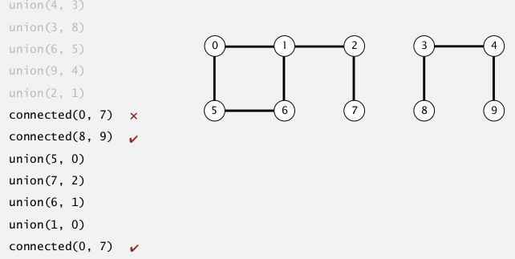

1. Dynamic Connectivity pb
pb statement
a set of N obj, indexed by 0,1,...,N-1
⇒
UNION: connect objects void union(int p, int q)
FIND: is there a path connecting 2 obj? boolean connected(int p, int q)
ex:

connect components(联通分支): max set of obj that are mutually connected.
UF API
- union(p,q): connect 2 obj
- connected(p,q): test if p and q are connected
- find(p): find the component id of p
- count(): nb of components
注意:
命名不是很好, 这里的find()函数不对应FIND query, connected()函数才是真正的FIND query, find()函数是为了connected()函数而做的一个辅助函数(find(p): return the root of the node p )
在connected里就可以调用find: return find(p)==find(q)
应该是interface更好一些...
public interface UF{
void union(int p, int q);
boolean connected(int p, int q);
//int find(int p);
//int count();
}
测试client:
2. Quick Find
"eager approach"
data structure
⇒ an int array id[]
initialized to id[p]=p for all p
interpretation: id[p] = component id of obj p
⇒ p and q are connected iff* id[p]==id[q] (ie. find very fast)
没有用find()函数
UF operations
- FIND:
connected(p,q): very fast, just check id[p] and id[q]
- UNION:
when merging 2 components :
union(p,q): id[p]=id[q](总是让第一个参数p的id变为第二个参数q的id),
⇒ then have to modify all entries with id equal to id[p] !
⇒ too many entries to change
implementation
(class QuickFindUF implements UF)
complexity:
- FIND: cte
- UNION: lin...
if N obj + N unions ⇒ quad time !
btw, 程序运行速度: ~10^9/s
3. Quick Union
"lazy approach"
data structure
⇒ also an int array id[]
considering a set of trees, 此时每个联通分支都是一个tree
interpretation: id[p] = parent index of obj p (觉得这个数组叫做father更好....)
⇒ p is a root node iff id[p]==p
UF operations
- FIND:
connected(p,q):check if root of p == root of q
- UNION:
union(p,q):just set p's root to be child of q's root (把第一个参数p的那棵树放入第二个参数q的树的根节点作为子树)
- root():
前两个的操作都需要一个函数查找一个节点的root, 需要写一个函数实现, 也很简单, 一路找parent即可:
private int root(int p){
while (p!=id[p]) p=id[p];
return p;
}
implementation
complexity
in the worst case (all elements is in a list form), root() is ~N, so:
- FIND: lin
- UNION: lin
quick find和quick union的问题:
4. Quick Union Improvements
improvement1: weighting
keep track of tree size ⇒ balance by taking the small tree be a child of the large tree
⇒ add an extra array: sz[] sz[i] is the size of the tree with root i
implementation
(数组int sz[] 初始全部为1)
-
依然需要
root()函数.private int root(int p){ while(p!=id[p]) p=id[p]; return p; }
-
FIND
public boolean connected(int p, int q){ return root(p)==root(q); }
-
UNION
public void union(int p, int q){ int rp = root(p), rq=root(q); if(rp==rq) return; // if (sz[rp]<sz[rq]){ id[rp]=rq; sz[rq]+=sz[rp]; } else{...} }
complexity
FIND: proportional to depth of p and q in their tree UNION: const if p and q are root
- proposition
the max depth of weightedQuickUnion is lgN
[pf] considering a node x, in tree T1, dep(x) is x's depth in its tree.
→ dep(x) will increase by 1, iff T1 is merged into another tree T2 (and by the algo, shoud have |T1|<=|T2| )
→ x's tree's size become |T1|+|T2| >= 2|T1|
⇒ everytime dep(x) increased by 1, x's tree's size will at least double*
at first dep(x)=1, if dep(x) increases lgN times, the size of the tree will be >= N
CQFD.
so the root() function takes only lgN time.
conclusion: both UNION and FIND will be in lgN time.
improvement 2: path compression
- imporve the root() function:
when looking for root of a node ⇒ link all nodes in the path up to the root.
⇒ just a constant extra time compared to old implementation.
-
2 pass implementation:
private int root(int p){ int r = p; while(r!=id[r]) r=id[r]; while(p!=r){ int t = p; p=id[p]; id[t]=r; } return r; }
flatens the tree greatly.
- single pass implementation:
just make all other node point to its grandparent (halving the path length)
⇒ not as flatening as before, but in practice will almost be the same.
just one extra line of code:
private int root(int p){
while(p!=id[p]){
id[p] = id[ id[p] ];
p=id[p];
}
return p;
}
complexity
(for weighet quick union with path compression — WQUPC)
very very small:
lg*() function: "iterated log function", lg(N) = the number of time to take log to get to 1
lg()几乎可以看成常数了:
ex. lg(65536) = 4* (x^16=65536)
because: lg(65536)=16 ; lg(16) = 4; lg(4)=2; lg(2)=1.
⇒ N obj, M unions will take (almost) linear time
(有人证明了不存在理论上linear的算法. )
conclusion: both UNION and FIND will be in constant time.
summery
上面这个表格好像quick union的部分有问题? 最坏情况下应该是N+MN吧??
书上是这么写的:
WQUCF reduce 30 years to 6 seconds.
5. Union Find Application
- percolation
- dynamic connectivity
- Kruskal MST algo
- Games (GO)
- .......
percolation
- model:
NN grid of sites
⇒ each site is open with proba=p*
⇒ sys percolate iff bottom and top are connected by open sites.
- question: the percolation probability as a function of p (phase transition)
nobody knows how to get the threshold mathematically
⇒ run simulations to find out the phase transition threshold.
- Monte Carlo simulation
→ all sites initilized to be closed
→ randomly open sites one by one
→ when the sys percolates, the vacancy percentage is an estimate of p
*(run above simulation for millions of times)
implementation
- N^2 sites, named 0 to N^2-1
- add 2 more vertual sites: one on top, one on bottom
- openning a site: union to adjcent open sites (at most 4 unions)
Part 1 of series «Algorithms Princeton MOOC I»：
- [Algorithms I] Week 1-1 Union-Find
- [Algorithms I] Week 1-2 Analysis of Algorithms
- [Algorithms I] Week1-Lab: Percolation
- [Algorithms I] Week 2-1 Stacks and Queues
- [Algorithms I] Week 2-2 Elementary Sorts
- [Algorithms I] Week 3-1 Mergesort
- [Algorithms I] Week 3-2 Quicksort
- [Algorithms I] Week 4-1 Priority Queue
- [Algorithms I] Week 4-2a Elementry Symbol Tables
- [Algorithms I] Week 4-2b Binary Search Trees
- [Algorithms I] Week 5-1 Balanced Search Trees
- [Algorithms I] Week 5-2 Geometric Applications of BSTs
- [Algorithms I] Week 6 Hash Tables
Disqus 留言